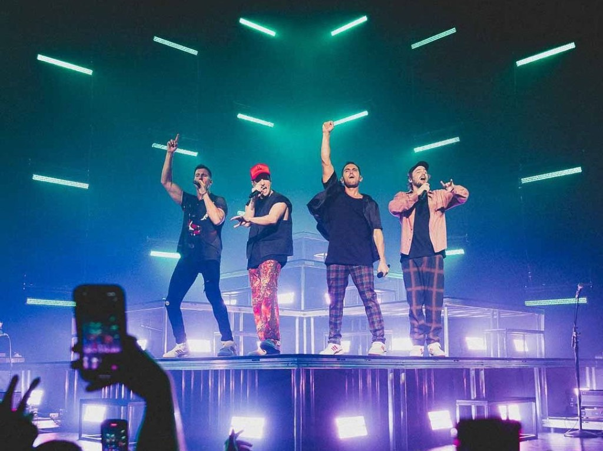

BIG TIME RUSH
Big Time Rush, conocido por sus siglas BTR, es una banda de pop estadounidense formada en 2009. La banda está compuesta por Kendall Schmidt, James Maslow, Carlos Pena Jr., y Logan Henderson. Su trayectoria comenzó cuando Nickelodeon decidió lanzar una serie de televisión, la cual seguía las aventuras de cuatro amigos de Minnesota que se convierten en estrellas del pop. El show debutó en noviembre de 2009 y rápidamente ganó popularidad entre el público juvenil.

Éxito comercial y álbum debut (2010-2011)
El primer sencillo de BTR, "Big Time Rush," fue lanzado simultáneamente con el estreno de la serie. En 2010, lanzaron su álbum debut homónimo, "BTR," que incluyó éxitos como "Boyfriend" y "Til I Forget About You." El álbum debutó en el número 3 del Billboard 200 y fue certificado oro por la RIAA. La combinación de la serie de televisión y la música ayudó a consolidar la popularidad de la banda.
Expansión y giras (2011-2013)
En 2011, BTR lanzó su segundo álbum de estudio, "Elevate," que incluía éxitos como "Music Sounds Better With U" y "Elevate." Este álbum mostró una maduración en su sonido y les permitió emprender su primera gira internacional, el "Better With U Tour." En 2012, protagonizaron su primera película para televisión, "Big Time Movie," y lanzaron la banda sonora correspondiente. Más tarde ese año, comenzaron su "Big Time Summer Tour."

Últimos años y proyectos paralelos (2013-2014)
En 2013, lanzaron su tercer álbum de estudio, "24/Seven," con sencillos como "Like Nobody's Around" y "24/Seven." La banda continuó su gira internacional, el "Summer Break Tour." Sin embargo, en 2014, tras el final de la serie de televisión, los miembros de BTR decidieron tomarse un descanso para enfocarse en proyectos personales.

Reunión y actividades recientes (2020-presente):
En 2020, los miembros de BTR anunciaron su regreso con una serie de conciertos de reunión y nueva música, lo que generó gran entusiasmo entre sus fanáticos. Han continuado lanzando sencillos y trabajando en nuevos proyectos tanto en conjunto como individualmente.